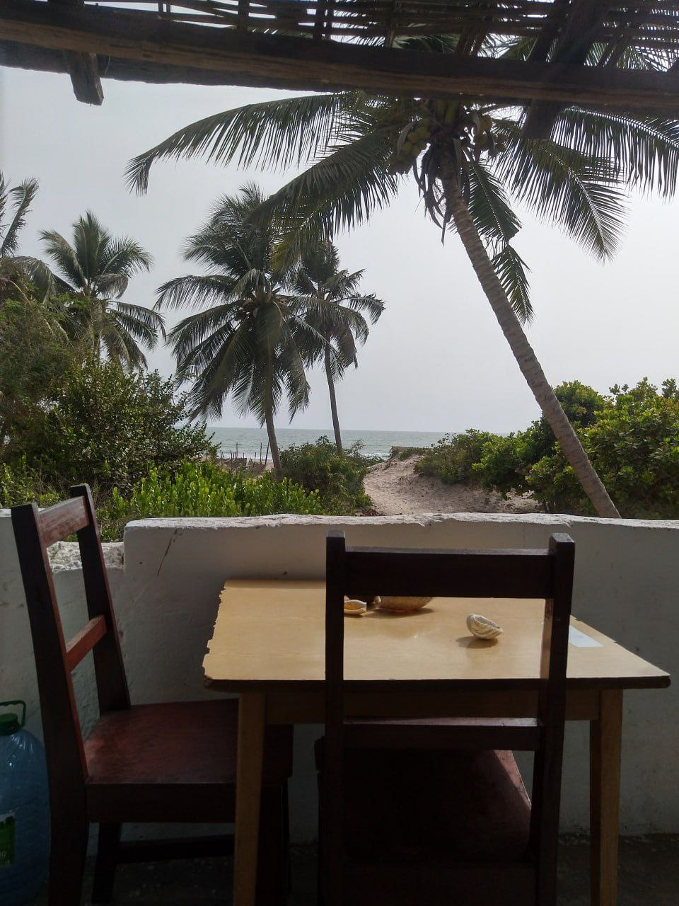

L'ÉVASION CASAMANÇAISE AU BORD DE L'OCÉAN
Bienvenue à Buhanor , véritable havre de paix au bord de l'océan, promet une évasion Casamancais authentique et ressourçante à Cap Skirring. Au-delà des paysages luxuriants et des vues imprenables sur la mer, le campement offre une immersion dans la culture locale, notamment à travers son architecture Diola traditionnelle. Vous pourrez y admirer des bâtisses en terre ornées de piliers sculptés, symboles du savoir-faire ancestral.
Un lieu idéal pour se détendre, se connecter à la nature et partager la convivialité Casamancais.
Nos Chambres
Vue sur l'océan depuis les chambres
Réveillez-vous avec une vue imprenable sur l'océan depuis votre chambre. Nos hébergements, conçus dans le respect de l'environnement, vous offrent un confort simple et chaleureux. Un cadre idéal pour vous ressourcer et profiter pleinement de vos vacances à Cap Skirring.

Aventure & Découverte
Explorer la Casamance
Au-delà de nos plages idylliques, Cap Skirring et la Basse Casamance vous invitent à un voyage authentique. Que vous soyez en quête d'aventure, de culture ou de pure détente, une multitude d'expériences vous attendent à deux pas de notre campement.


Nos voyageurs témoignent ⭐️ 5,0/5
"Les chambres sont spacieuses et la vue sur mer est incroyable.
Les excursions proposées nous ont fait découvrir une Casamance authentique."
"Très bon accueil de Seni qui est venu me chercher à l'aéroport. La chambre est confortable, propre et avec le nécessaire ! Le plus : le balcon privé pour un réveil face à la mer, magnifique !"
√âmilie (Utilisatrice Airbnb depuis 9 ans)"Une p√©pite üòä Si vous √™tes √† la recherche de tranquillit√©, de convivialit√©, et d'authenticit√©, ce lieu est fait pour vous."
Mélanie (Utilisatrice Airbnb depuis 9 ans)"Le Campement Buhanor est un havre de paix. L'accès direct à la plage est un vrai plus et le petit-déjeuner sur la terrasse était délicieux."
Fatou (Voyageuse locale)Nos Offres et Promotions Exclusives


Réservez votre séjour dès maintenant !
Contactez-nous pour plus d'informations